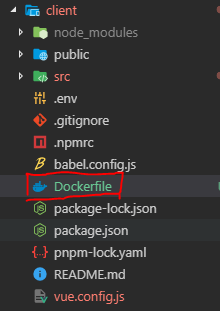
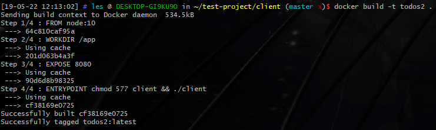

# Docker 學習筆記 (五) — 以一個 TodoList 實戰 Dockerfile
# Docker 的問世，翻轉了人們對用環境部署與開發的習慣，學會 Docker 絕對是一項不虧本的投資

在上一篇的文章中，我們講述了該 如何撰寫 Dockerfile 。
並且解釋了常用的語法與一些需要注意的事項 。
而在本篇中，我們將用一個小小的例子來嘗試講解如何使用 Dockerfile 啟動一個專案。
首先，一樣是使用「 幾乎算是專案領域中的 Hello World」 — Todo List ，作為本次主題的範例專案。
這個專案是由 Vue-cli3 建立的，因此我們可以了解， 此專案的運行環境將必須要有 Node.js 。
以此為概念，我們開始撰寫我們第一個 Dockerfile。
# 於開發階段使用 Docker
由於，在開發階段，我們的 Code 會一直處於經常修改變動的階段，因此我們不希望每修改一次就要重新 build image 、 run container ，在此時，我們選擇以專案掛載入 Container 的方式使用 Docker。
如此的好處在於：
- 我們可以享有 Docker 開發環境與本機環境分離的優點，又可以繼續我們的專案開發流程。
- 當 Dockerfile 完成後，未來僅需要執行
docker run即可一鍵完成開發環境的建置，直接進入開發。
為了達到以上兩點目的，我們開始撰寫我們的 Dockerfile。
— —
首先，我們先在專案根目錄下增加一個檔案，檔名就是 Dockerfile。

由於專案需要 Node.js 執行環境，因此我們從 DockerHub 上找尋 Node 的最新穩定版本作為 Docker image 的 Base 建立我們自己的 Image。
1
FROM node:latest
個人習慣，我會定義一個當前目錄，作為整個專案的目錄掛載位置。
1
WORKDIR /app
開發階段，我們的專案 PORT 在 8080，因此需要將 PORT 給 EXPOSE 出來。
1
EXPOSE 8080
最後，也最重要。
由於我們是 Container 啟動階段才將專案掛載，因此專案的啟動、執行 Dependency 的安裝，都應該要在 Container 後執行。
因此我們在這邊建立了一小腳本，以供待會 Container 啟動時執行我們要的動作。
1
2
3
4
5
6
7
8
9
10
11
12
13#!/usr/bin/perl -w
use strict;
use Cwd;
my $dir = 'node_modules';
# install pnpm
system("npm install pnpm -g");
# if don't have node_modules, install it
system("pnpm install") unless (-e $dir and -d $dir);
# run serve
system("npm run serve");
由於我對 Bash 腳本語言不熟，因此改使用 Perl 撰寫腳本。
之後我們回到 Dockerfile ，並且使用 ENTRYPOINT 這個指令要求 Docker 於啟動 Container 時執行我們的腳本。
1
ENTRYPOINT chmod 577 docker_todo.pl && ./docker_todo.pl
實際的 Dockerfile 會長成像這樣。
1
2
3
4FROM node:latest
WORKDIR /app
EXPOSE 8080
ENTRYPOINT chmod 577 client && ./client
就短短幾行。
在完成了 Dockerfile 後，我們就以此建立我們自己的 Image 吧！
在 Dockerfile 所在的目錄中，使用以下指令
1
docker build -t <your docker image name> .
接下來應該就會看到它很迅速地跑完了建置的流程。

查看 docker images
1
docker images
接下來，我們就可以使用此 Image 啟動我們的 Container 了。
記得要：
- 將端口連接到 host
(-p <host port>:8080) - 掛載自己的專案。
(-v <source path>:<dist path>) - 幫 Container 取個名字
(可選可不選)
綜合以上內容，我們的 docker Container 建立時就會類似以下指令。
1
docker run --rm -v $PWD/client:/app -p 8080:8080 --name container_name todos2
其中， $PWD 代表當前使用者的目錄。你當然也可以用絕對路徑，這因人習慣而異。
如果順利啟動，應該就可以看到以下畫面了。
輸入網址，查看是否能夠訪問專案。
# 於部屬階段使用 Docker
這部分的文件就很多了，甚至在 Vue 官網有關 Dockerize 章節 也都有了可以參考範例。
本文就擷取官網的範例作為講解。
其他使用方式與上面的介紹無異。
1
2
3
4
5
6
7
8
9
10
11
12
13
14
15
16
17FROM node:lts-alpine
# 首先安裝一個簡單的 http server。
# 在現實環境，我們會使用 nginx/apache 作為 http service。
# 這部分該如何實現，我們未來章節會講述。
RUN npm install -g http-server
# 將 /app 資料夾作為當前的工作環境
WORKDIR /app
# 複製 'package.json' 與 'package-lock.json'
COPY package*.json ./
# 安裝專案的 Dependency
RUN npm install
# 將整個專案複製進 Docker
COPY . .
# 使用 npm run build 建置專案
RUN npm run build
# 暴露 8080 port
EXPOSE 8080
當我們 Dockerfile 撰寫好後。
一樣使用 docker build 建立 Image。
啟動 docker container 時，與開發階段步驟不同的方在於，我們不需要於啟動才掛載專案 (因為專案早就在 Build 時就複製進 Docker Image 了。)
所以此處，我們僅需要使用
1
docker run -p 8080:8080 --rm --name todo todos
即可。
# 結論
在此章節中，我們以一個 Todo 範例講述了如何使用 Dockerfile 為自己的專案建立 Docker image。
並且示範了兩種需求狀況下，所選擇使用的 Dockerfile 的方法。
- 於 Container 階段才掛載專案，利用掛載的特性同步 Docker 內部的專案 Code 與本機的專案 Code，以因應開發時須持續變更 Code 的開發需求。
- 於 Build 階段，將專案複製進 Image。Docker 只負責啟動整個 Container；適用於專案已經穩定，只需將專案部屬到環境的狀況。
到目前為止，Docker 的部分告一段落了。
於下一章，我們將開始講述 docker-compose — 一個將多個 docker 統整的工具。